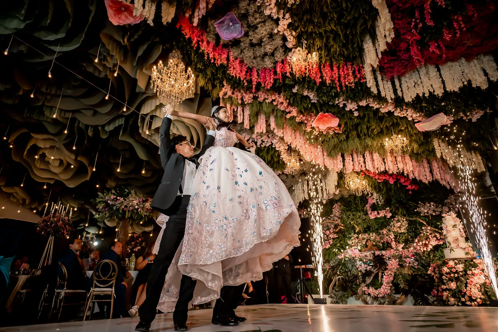
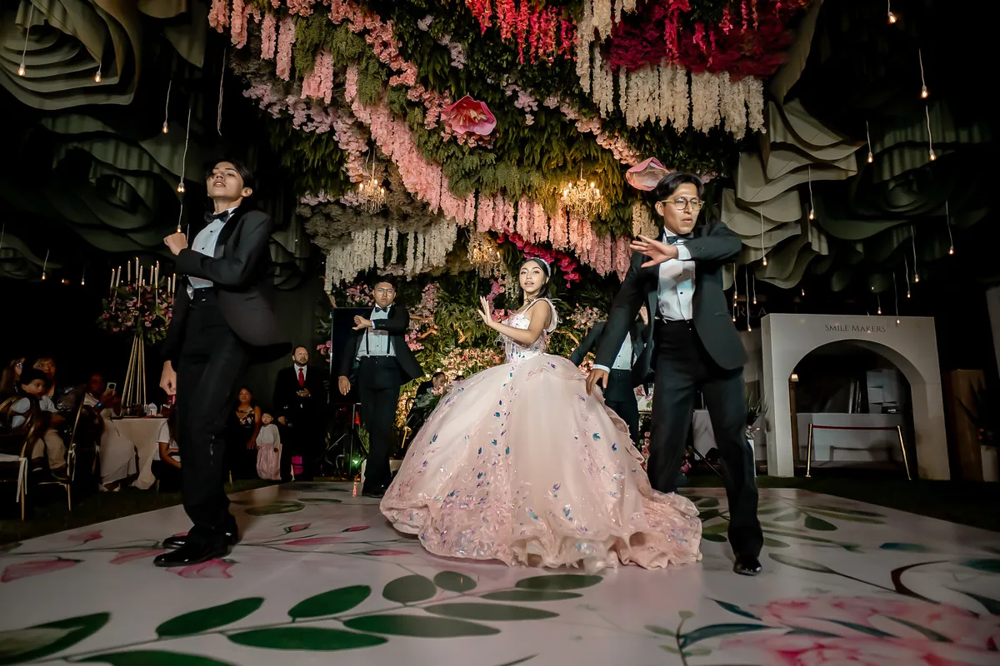
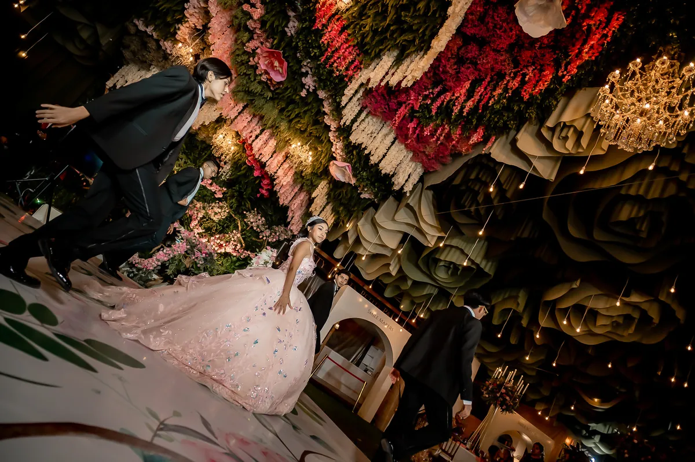
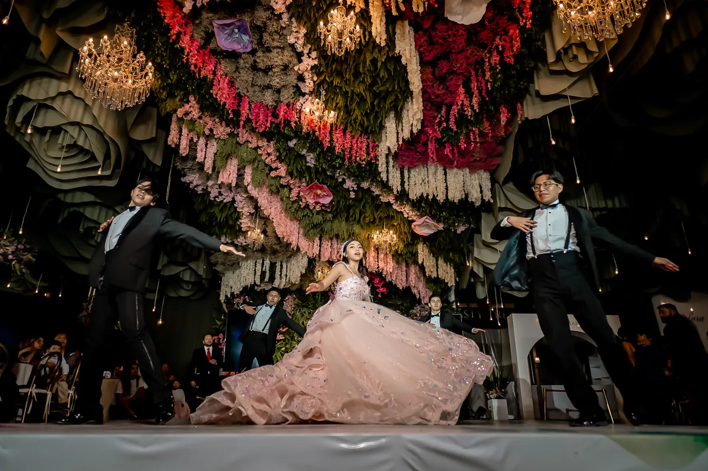
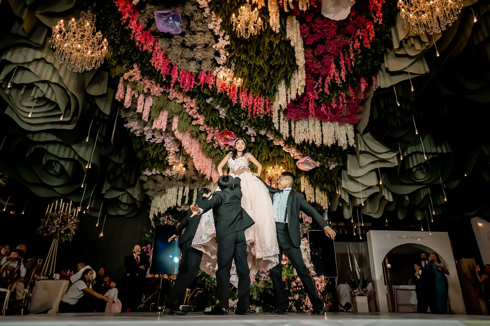
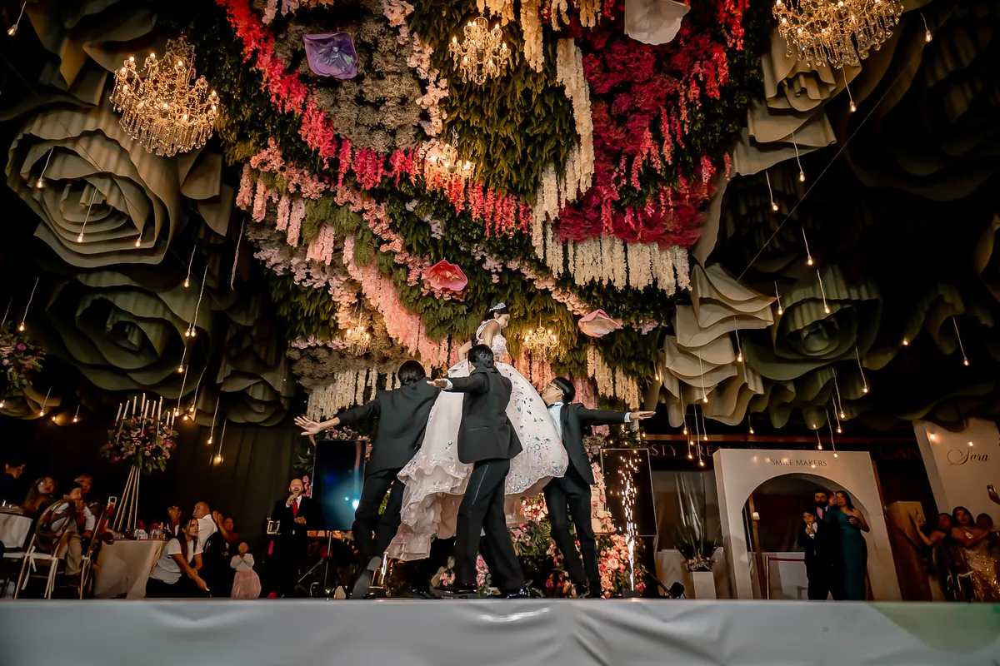
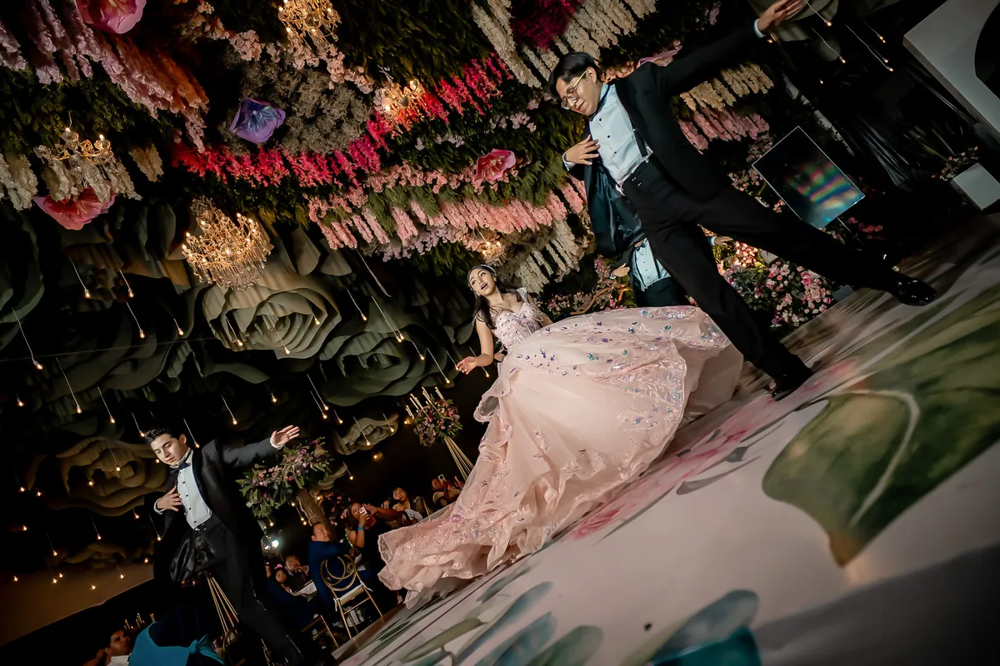
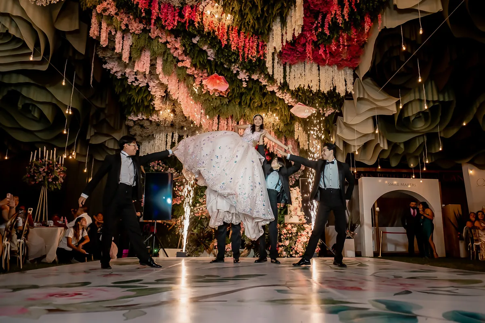

XV AÑOS
Una celebración con tu personalidad.
Cuéntanos cómo imaginas tu gran entrada, tu vals o tu baile sorpresa y armamos el show a la medida de tu fiesta.
Estas son algunas de las fiestas de XV en las que hemos bailado.
Cotiza tu show de XV años






